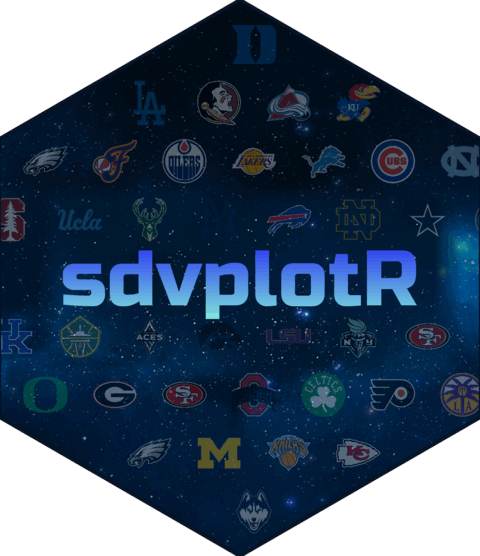
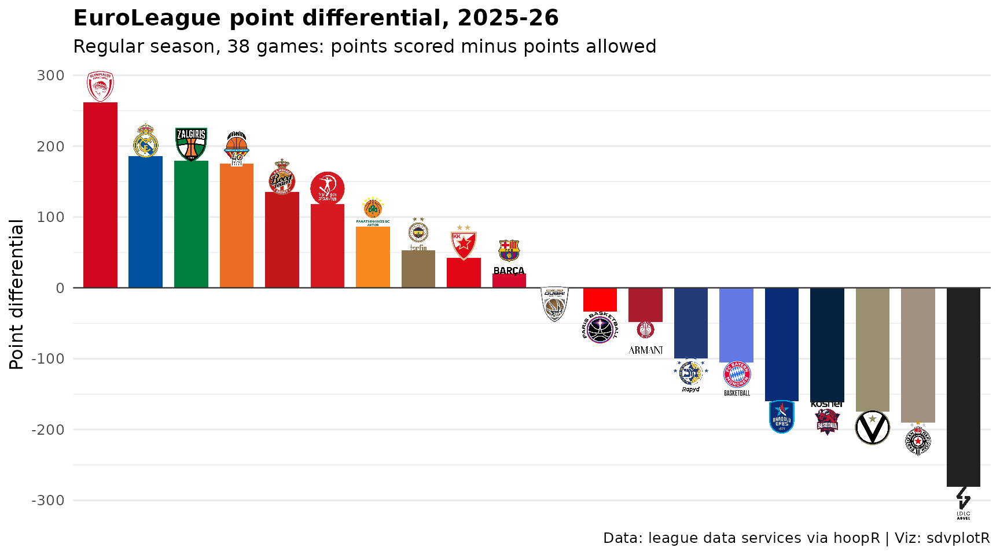
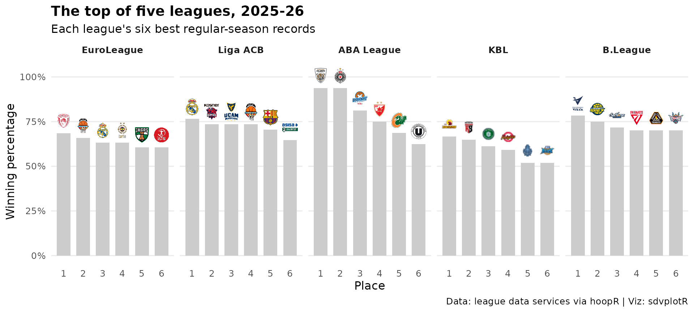
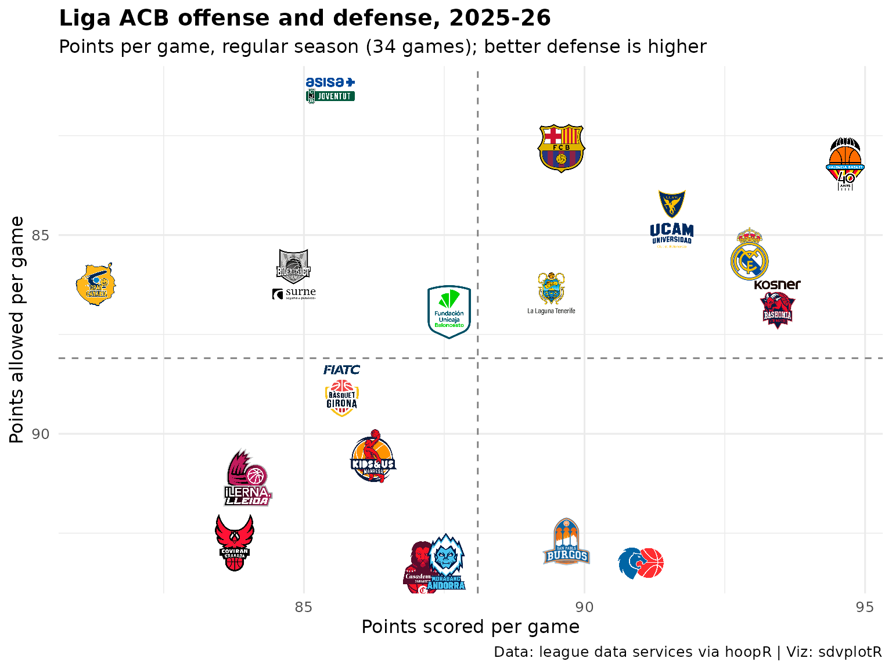

International Basketball Visualizations
Saiem Gilani


Source: vignettes/intl-basketball-viz.Rmd
intl-basketball-viz.RmdOn this page
Three charts and a table from five leagues’ 2025-26 seasons:
- the EuroLeague’s point differential in team colors;
- the B.League’s final standings;
- the top of the EuroLeague, Liga ACB, the ABA League, the KBL and the B.League side by side;
- Liga ACB’s offense against defense.
The standings come from hoopR, which reads each
league’s own data service. The team ids those services return are the
ids sdvplotR’s team index keys these leagues by. So the logos and colors
join with no name matching. Leagues and Identifiers lists
what each league’s team_id is.
Load the season
# the 2025-26 final regular-season standings of each league
euroleague <- hoopR::euroleague_standings(competition_code = "E", season_code = "E2025", round = 38) |>
select(position, club_code, club_name, games_won, games_lost, points_for, points_against, points_difference)
acb <- hoopR::acb_standings(season = 2026) |> # season is the END year (2026 = 2025-26)
filter(season == 2026) |>
select(position, club_id, team, wins, losses, points_for, points_against)
aba <- hoopR::aba_standings(season = 2026) |>
filter(table == "Regular Season 2025/26") |>
select(rank, team_id, team_name, wins, losses, point_diff)
kbl <- hoopR::kbl_standings(season = 2026) |>
filter(season == 2026) |>
select(rank, team_code, team_name, wins, losses, win_rate)
bleague <- hoopR::bleague_standings(season = 2026, tab = 1) |>
filter(section_en %in% c("East", "West")) |>
select(conference = section_en, rank, team_id, team, wins, losses, win_pct, games_behind, point_diff)These calls are read from a snapshot taken on November 26, 2026
(hoopR 3.2.0), because the leagues’ data services are not called when
this site is built. data-raw/article_fixtures.R takes it
with the same code.
Each league’s id column is already the index’s team_id.
Converting it to character once gives every join and scale the same
type. sdv_resolve() with id_system = "team_id"
confirms that every id is in the index (TRUE for each
league):
# the EuroLeague's points_difference comes as text ("+262"): recompute it
euroleague <- mutate(euroleague, team = club_code, points_difference = points_for - points_against)
acb <- mutate(acb, team_id = as.character(club_id))
aba <- mutate(aba, team_id = as.character(team_id))
kbl <- mutate(kbl, team_id = as.character(team_code))
bleague <- mutate(bleague, team_id = as.character(team_id))
c(
euroleague = !anyNA(sdv_resolve(euroleague$team, "euroleague", id_system = "team_id")),
acb = !anyNA(sdv_resolve(acb$team_id, "acb", id_system = "team_id")),
aba = !anyNA(sdv_resolve(aba$team_id, "aba", id_system = "team_id")),
kbl = !anyNA(sdv_resolve(kbl$team_id, "kbl", id_system = "team_id")),
bleague = !anyNA(sdv_resolve(bleague$team_id, "bleague", id_system = "team_id"))
)
#> euroleague acb aba kbl bleague
#> TRUE TRUE TRUE TRUE TRUE
caption <- "Data: league data services via hoopR | Viz: sdvplotR"1. EuroLeague point differential in team colors
Bars in each club’s color from scale_fill_sdv(), with
its crest at the end of the bar from geom_sdv_logos(). The
colors are the index’s logo colors, as in every other league.
diff <- euroleague |>
arrange(desc(points_difference), team) |>
mutate(
team = factor(team, levels = team),
logo_y = points_difference + if_else(points_difference >= 0, 22, -22)
)
ggplot(diff, aes(team, points_difference)) +
geom_col(aes(fill = team), width = 0.75) +
geom_hline(yintercept = 0, colour = "grey20", linewidth = 0.4) +
geom_sdv_logos(aes(y = logo_y, team = team), league = "euroleague", width = 0.04) +
scale_fill_sdv(league = "euroleague") +
labs(
title = "EuroLeague point differential, 2025-26",
subtitle = "Regular season, 38 games: points scored minus points allowed",
x = NULL,
y = "Point differential",
caption = caption
) +
theme_minimal(base_size = 12) +
theme(
legend.position = "none",
axis.text.x = element_blank(),
panel.grid.major.x = element_blank(),
plot.title = element_text(face = "bold")
)
2. B.League standings by conference
A gt table grouped by conference, with gt_sdv_logos()
for the logos. The team names are the B.League’s own full club names, in
Japanese. The index’s B.League names are the short ones
("A千葉"), so this table joins on team_id, not
on the name.
bleague |>
mutate(logo = team_id) |>
arrange(conference, rank) |>
select(conference, rank, logo, team, wins, losses, win_pct, games_behind, point_diff) |>
gt(groupname_col = "conference") |>
gt_sdv_logos(columns = "logo", league = "bleague", height = 24) |>
fmt_number(columns = win_pct, decimals = 3) |>
cols_align(align = "left", columns = team) |>
cols_label(
rank = "", logo = "", team = "Team", wins = "W", losses = "L", win_pct = "PCT",
games_behind = "GB", point_diff = "DIFF"
) |>
tab_header(
title = "B.League standings, 2025-26",
subtitle = "B1, final regular season (60 games), by conference"
) |>
tab_source_note(caption) |>
gt_theme_athletic()| B.League standings, 2025-26 | |||||||
| B1, final regular season (60 games), by conference | |||||||
| Team | W | L | PCT | GB | DIFF | ||
|---|---|---|---|---|---|---|---|
| East | |||||||
| 1 |  |
宇都宮ブレックス | 45 | 15 | 0.750 | NA | 329 |
| 2 |  |
千葉ジェッツ | 42 | 18 | 0.700 | 3 | 450 |
| 3 |  |
群馬クレインサンダーズ | 42 | 18 | 0.700 | 3 | 609 |
| 4 |  |
アルバルク東京 | 41 | 19 | 0.683 | 4 | 237 |
| 5 |  |
レバンガ北海道 | 37 | 23 | 0.617 | 8 | 94 |
| 6 |  |
仙台89ERS | 35 | 25 | 0.583 | 10 | 177 |
| 7 |  |
横浜ビー・コルセアーズ | 26 | 34 | 0.433 | 19 | -141 |
| 8 |  |
サンロッカーズ渋谷 | 25 | 35 | 0.417 | 20 | -219 |
| 9 |  |
越谷アルファーズ | 21 | 39 | 0.350 | 24 | -383 |
| 10 |  |
茨城ロボッツ | 19 | 41 | 0.317 | 26 | -311 |
| 11 |  |
アルティーリ千葉 | 19 | 41 | 0.317 | 26 | -317 |
| 12 |  |
川崎ブレイブサンダース | 16 | 44 | 0.267 | 29 | -488 |
| 13 |  |
秋田ノーザンハピネッツ | 10 | 50 | 0.167 | 35 | -736 |
| West | |||||||
| 1 |  |
長崎ヴェルカ | 47 | 13 | 0.783 | NA | 690 |
| 2 |  |
シーホース三河 | 43 | 17 | 0.717 | 4 | 360 |
| 3 |  |
琉球ゴールデンキングス | 42 | 18 | 0.700 | 5 | 429 |
| 4 |  |
名古屋ダイヤモンドドルフィンズ | 41 | 19 | 0.683 | 6 | 471 |
| 5 |  |
三遠ネオフェニックス | 36 | 24 | 0.600 | 11 | 166 |
| 6 |  |
佐賀バルーナーズ | 32 | 28 | 0.533 | 15 | 35 |
| 7 |  |
広島ドラゴンフライズ | 31 | 29 | 0.517 | 16 | 116 |
| 8 |  |
島根スサノオマジック | 28 | 32 | 0.467 | 19 | -98 |
| 9 |  |
大阪エヴェッサ | 23 | 37 | 0.383 | 24 | -120 |
| 10 |  |
滋賀レイクス | 23 | 37 | 0.383 | 24 | -278 |
| 11 |  |
京都ハンナリーズ | 20 | 40 | 0.333 | 27 | -395 |
| 12 |  |
富山グラウジーズ | 18 | 42 | 0.300 | 29 | -406 |
| 13 |  |
ファイティングイーグルス名古屋 | 18 | 42 | 0.300 | 29 | -271 |
| Data: league data services via hoopR | Viz: sdvplotR | |||||||
3. Five leagues, side by side
Each league’s top six by winning percentage, one panel per league.
The ABA League’s regular season is two groups of nine, so its top six
comes from both groups. The bars carry geom_sdv_logos(),
which takes one league per layer, so the chart adds one layer for each
league.
league_names <- c(
euroleague = "EuroLeague", acb = "Liga ACB", aba = "ABA League", kbl = "KBL", bleague = "B.League"
)
top6 <- bind_rows(
transmute(euroleague, league = "euroleague", team = as.character(team), wins = games_won, losses = games_lost),
transmute(acb, league = "acb", team = team_id, wins, losses),
transmute(aba, league = "aba", team = team_id, wins, losses),
transmute(kbl, league = "kbl", team = team_id, wins, losses),
transmute(bleague, league = "bleague", team = team_id, wins, losses)
) |>
mutate(pct = wins / (wins + losses)) |>
group_by(league) |>
slice_max(pct, n = 6, with_ties = FALSE) |>
mutate(place = row_number()) |>
ungroup() |>
mutate(label = factor(league_names[league], levels = league_names))
layers <- lapply(split(top6, top6$league), function(d) {
geom_sdv_logos(aes(x = place, y = pct + 0.07, team = team), data = d, league = d$league[1], width = 0.13)
})
ggplot(top6, aes(place, pct)) +
geom_col(fill = "grey80", width = 0.7) +
layers +
facet_wrap(~label, nrow = 1) +
scale_x_continuous(breaks = 1:6) +
scale_y_continuous(labels = scales::label_percent(), limits = c(0, 1.05), breaks = seq(0, 1, 0.25)) +
labs(
title = "The top of five leagues, 2025-26",
subtitle = "Each league's six best regular-season records",
x = "Place",
y = "Winning percentage",
caption = caption
) +
theme_minimal(base_size = 12) +
theme(
panel.grid.major.x = element_blank(),
panel.grid.minor = element_blank(),
strip.text = element_text(face = "bold"),
plot.title = element_text(face = "bold")
)
4. Liga ACB: offense against defense
Points scored and allowed per game, with each club’s logo and the
league averages from geom_mean_lines(). The y axis is
reversed, so the best teams sit top right.
acb_rates <- acb |>
mutate(
games = wins + losses,
ppg = points_for / games,
opp_ppg = points_against / games
)
ggplot(acb_rates, aes(ppg, opp_ppg)) +
geom_mean_lines(aes(x0 = ppg, y0 = opp_ppg), colour = "grey50", linetype = "dashed") +
geom_sdv_logos(aes(team = team_id), league = "acb", width = 0.06) +
scale_y_reverse() +
labs(
title = "Liga ACB offense and defense, 2025-26",
subtitle = "Points per game, regular season (34 games); better defense is higher",
x = "Points scored per game",
y = "Points allowed per game",
caption = caption
) +
theme_minimal(base_size = 12) +
theme(plot.title = element_text(face = "bold"))
More leagues
hoopR has standings, schedules and statistics readers for the other
international leagues in the index too: FEB, KZS, LKL, LBA, VTB, EASL,
IBBA and DataCore’s NBL. Most join the same way, through the reader’s
team id. Two need a note: DataCore’s NBL (nbl_rosetta_*())
is the index’s "nbl_au" (league "nbl" is
ESPN’s NBL, with ESPN ids), and IBBA joins on team_uid, not
team_id. The Basketball Bundesliga’s ("bbl")
archived logos are a placeholder shield for some teams, so it is left
out of this article.
Related SportsDataverse packages
- sdvplot - the Python plotting package
- sdvplot-js - the JavaScript / TypeScript plotting packages
- cfbfastR - college football
- hoopR - men’s basketball
- wehoop - women’s basketball
- baseballr - baseball
- fastRhockey - hockey
- oddsapiR - betting odds
- sportyR - playing surfaces
- sportsdataverse-py - the Python package
- sportsdataverse-R - the R meta-package